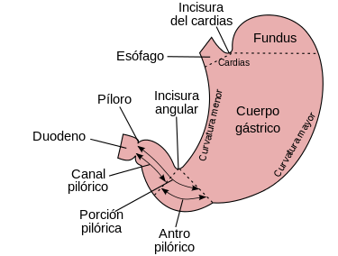

El estómago (del latín stomăchus, derivado del griego [stomachos], a partir del prefijo [stoma], «boca») es la porción del tubo digestivo situada entre el esófago y el intestino. En la especie humana se localiza en la región superior izquierda del abdomen, por debajo del diafragma. Es una cámara en la que se mezclan y almacenan los alimentos ingeridos que se van vaciando en pequeños intervalos hacia el duodeno gracias a los movimientos peristálticos, el vaciamiento gástrico completo necesita varias horas después de una comida copiosa.
